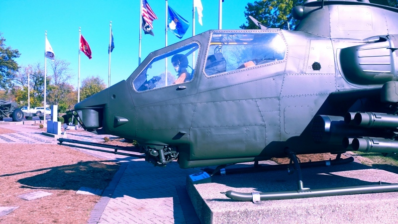
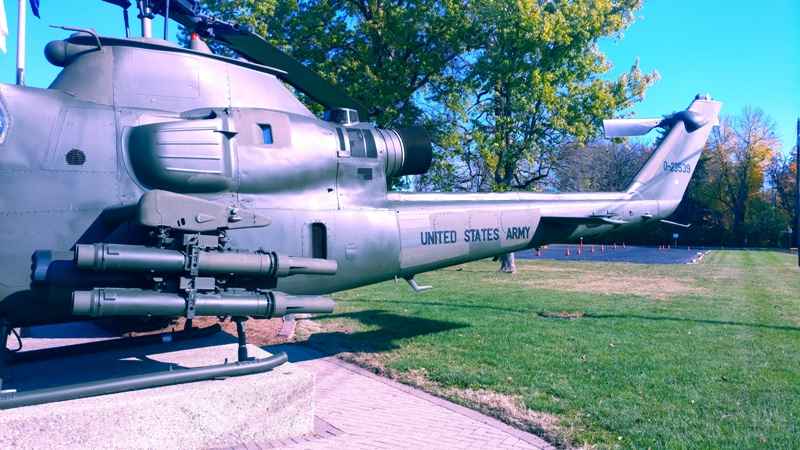
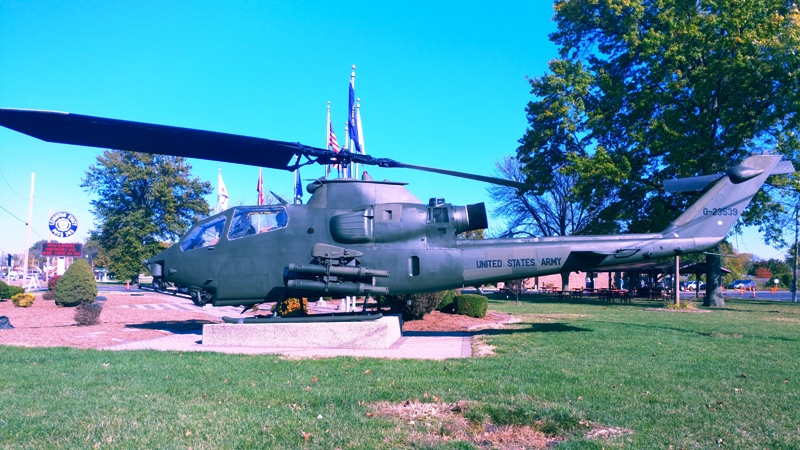
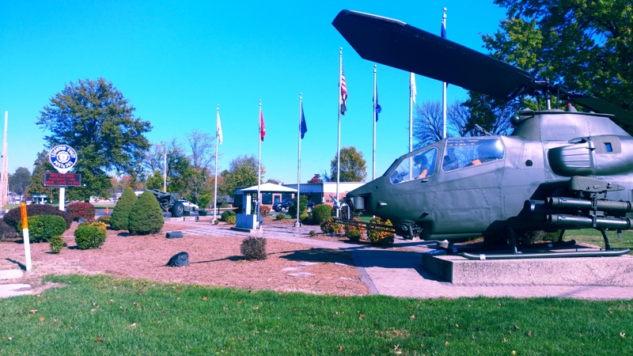

Our 1980 Huey Cobra AH-1F
SN 0-23539
The Bell AH-1 Cobra is a single-engined attack helicopter developed and manufactured by the American rotorcraft manufacturer Bell Helicopter. A member of the prolific Huey family, the AH-1 is also referred to as the Huey Cobra or Snake.
The AH-1 was rapidly developed as an interim gunship in response to the United States Army's needs in the Vietnam War. It used the same engine, transmission and rotor system of the Bell UH-1 Iroquois, which had already proven itself to be a capable platform during the conflict, but paired it with a redesigned narrow fuselage among other features. The original AH-1, being a dedicated attack helicopter, came equipped with stub wings for various weapons, a chin-mounted gun turret, and an armored tandem cockpit, from which it was operated by a pilot and gunner. Its design was shaped to fulfil a need for a dedicated armed escort for transport helicopters, giving the latter greater survivability in contested environments. On 7 September 1965, the Model 209 prototype performed its maiden flight; after rapidly gaining the support of various senior officials, quantity production of the type proceeded rapidly with little revision.
During June 1967, the first examples of the AH-1 entered service with the US Army and was promptly deployed to the Vietnam theatre. It commonly provided fire support to friendly ground forces, escorted transport helicopters, and flew in "hunter killer" teams by pairing with Hughes OH-6A Cayuse scout helicopters. In the Vietnam War alone, the Cobra fleet cumulatively chalked up in excess of one million operational hours; roughly 300 AH-1s were also lost in combat. In addition to the US Army, various other branches of the US military also opted to acquire the type, particularly the United States Marine Corps. Furthermore, numerous export sales were completed with several overseas countries, including Israel, Japan, and Turkey.
For several decades, the AH-1 formed the core of the US Army's attack helicopter fleet, seeing combat in Vietnam, Grenada, Panama, and the Gulf War. In US Army service, the Cobra was progressively replaced by the newer and more capable Boeing AH-64 Apache during the 1990s, with the final examples being withdrawn during 2001. The Israeli Air Force (IAF) operated the Cobra most prolifically along its land border with Lebanon, using its fleet intensively during the 1982 Lebanon War. Turkish AH-1s have seen regular combat with Kurdish insurgents near Turkey's southern borders. Upgraded versions of the Cobra have been developed, such as the twin engined AH-1 SeaCobra/SuperCobra and the experimental Bell 309 KingCobra. Furthermore, surplus AH-1 helicopters have been reused for other purposes, including civilian ones; numerous examples have been converted to perform aerial firefighting operations.
Refurbished and painted



